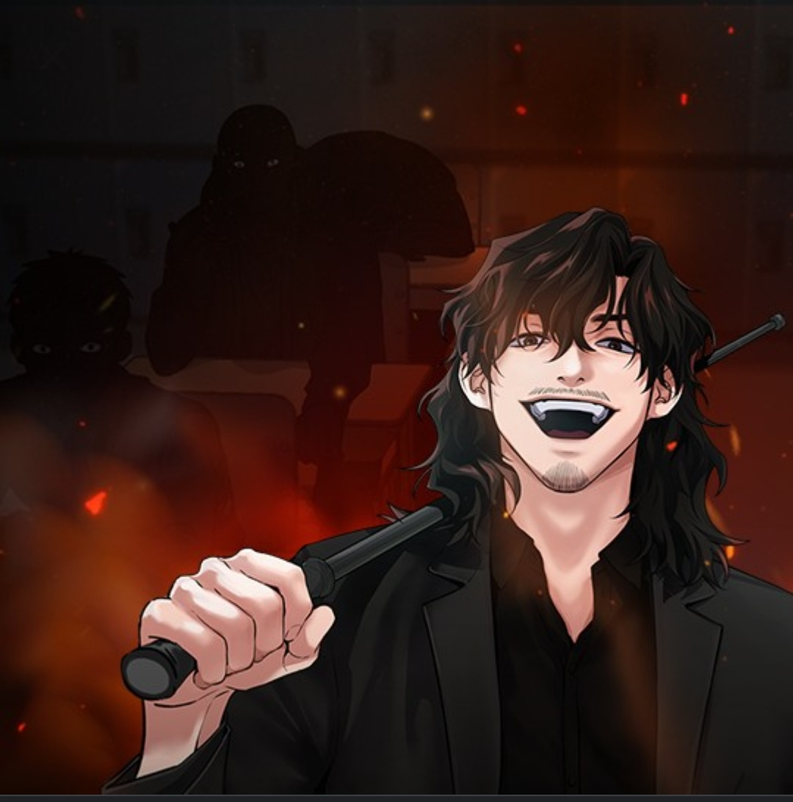
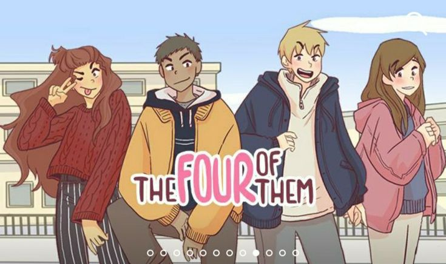

Get Schooled
Yongtaek Chae , GARAM HAN
Hwajin Na’s teaching techniques are pretty violent for someone who works in the Ministry of Education. That being said, when punishments don't seem to work on even the worst of school bullies, there is no better man for the job.

5.3M

Wished You Were Dead
SEOCHEONG , ARAN
King Karloi of Croisen finds himself at odds with his position in life. His wife’s father, Duke Deluah, is angling for the throne, and as an outsider to the family, Karloi fears for his position. His frustrations have affected his marriage, though he finds himself questioning his cold approach to his wife, Evonne. He may no longer recognize her, but Evonne saved his life long ago, and was his first love.
2.6M

The Four of Them
Mai Hirschfeld
Getting crushed by your crush. Coming out to your parents. Learning that your sister is your biggest dating rival. High school sure does have its share of twists, turns and moments of high drama. To get through it all with your smile and sanity intact, you’re going to need some friends.
8.5M

Lookism
Taejun Pak
Daniel is an unattractive loner who wakes up in a different body. Now tall, handsome, and cooler than ever in his new form, Daniel aims to achieve everything he couldn't before. How far will he go to keep his body... and his secrets?
42.2M